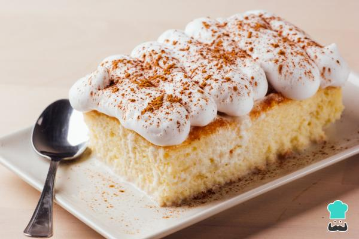

- Receta del Flan
- Receta del Cheesecake
- Receta del Tres Leches
- Receta de la Carlota
- Receta de los Polvorones
A Continuacion...
A continuación, te presento las recetas detalladas de los postres mencionados anteriormente, perfectos para ser elaborados y disfrutados en compañía de tu familia y amigos. Estos deliciosos postres son ideales para compartir en casa durante la época navideña, llenando tu hogar de dulces aromas y sabores que harán de cada momento algo inolvidable.
Cada una de estas recetas está pensada para que puedas sorprender a tus seres queridos con creaciones caseras que evocan cariño y alegría. Ya sea que estés buscando deleitar con un suave y cremoso flan, una refrescante carlota, un jugoso pastel de tres leches, unos clásicos polvorones o un elegante cheesecake, aquí encontrarás todos los detalles necesarios para preparar estos manjares.
Imagina la sonrisa en los rostros de tus invitados al probar un bocado de cada una de estas delicias, con el sabor y textura perfectos que solo pueden lograrse con ingredientes frescos y mucho amor. La Navidad es el momento perfecto para crear y compartir estos postres, convirtiendo cada reunión en una ocasión especial llena de recuerdos dulces e inolvidables.
Flan De Ensueño
Ingredientes:
- 1 taza de azúcar
- 5 huevos
- 1 lata de leche condensada
- 1 lata de leche evaporada
- 1 cucharadita de extracto de vainilla
Utencilios
- Molde para flan
- Batidora o licuadora
- Olla para baño maría
- Cuchara de madera
- Taza medidora
Preparacion...
1. Preparar el Caramelo: Colocar el azúcar en una sartén a fuego medio. Remover constantemente hasta que se derrita y tome un color ámbar. Verter el caramelo en el molde para flan, cubriendo el fondo y los lados.
2.Mezclar los Ingredientes: En una batidora o licuadora, mezclar los huevos, la leche condensada, la leche evaporada y la vainilla hasta obtener una mezcla homogénea.
3.Vertir en el Molde: Verter la mezcla en el molde caramelizado.
4.Cocinar al Baño María: Colocar el molde dentro de una olla con agua caliente (baño maría). Cocinar a fuego medio durante aproximadamente 1 hora, o hasta que al insertar un cuchillo en el centro, éste salga limpio.
5.Dejar Enfriar:Retirar del fuego y dejar enfriar a temperatura ambiente. Luego, refrigerar por al menos 2 horas antes de desmoldar.
Éxtasis de Queso "Cheesecake"
Ingredientes:
- 200g de galletas graham trituradas
- 100g de mantequilla derretida
- 500g de queso crema
- 200g de azúcar
- 3 huevos
- 1 cucharadita de extracto de vainilla
- 1 taza de crema agria
- Mermelada de frutas (para decorar)
Utencilios
- Molde desmontable
- Batidora
- Bowl para mezclar
- Taza medidora
- Espátula
Preparacion...
1.Precalentar el Horno: Precalentar el horno a 160°C (320°F).
2.Preparar la Base: Mezclar las galletas trituradas con la mantequilla derretida y presionar la mezcla en el fondo del molde desmontable.
3.Preparar el Relleno: En un bowl, batir el queso crema con el azúcar hasta obtener una mezcla suave. Añadir los huevos uno a uno, batiendo bien después de cada adición. Agregar la vainilla y la crema agria, y mezclar hasta que esté todo bien incorporado.
4.Hornear: Verter la mezcla sobre la base de galletas y hornear durante 50-60 minutos, o hasta que el centro esté casi firme. Dejar enfriar a temperatura ambiente y luego refrigerar por al menos 4 horas.
5.Decorar: Decorar con mermelada de frutas antes de servir.

Trilogía de Sabores "Tres Leches"
Ingredientes:
- 1 taza de harina de trigo
- 1 1/2 cucharaditas de polvo de hornear
- 1/4 de cucharadita de sal
- 5 huevos
- 1 taza de azúcar, dividida
- 1/3 de taza de leche
- 1 cucharadita de extracto de vainilla
- 1 lata de leche evaporada
- 1 lata de leche condensada
- 1/4 de taza de crema de leche
- Crema batida y frutas (para decorar)
Utencilios
- Batidora
- Molde para hornear
- Taza medidora
- Espátula
- Bowl para mezclar
Preparacion...
1.Precalentar el Horno: Precalentar el horno a 180°C (350°F). Engrasar y enharinar un molde para hornear.
2.Mezclar Ingredientes Secos: En un bowl, tamizar la harina, el polvo de hornear y la sal.
3.Preparar la Masa: Separar las claras de las yemas. Batir las claras a punto de nieve y añadir la mitad del azúcar. Batir las yemas con el resto del azúcar hasta que estén pálidas. Añadir la leche y la vainilla. Incorporar las claras batidas y la mezcla de harina, alternando.
4.Hornear: Verter la mezcla en el molde y hornear durante 30 minutos o hasta que al insertar un palillo salga limpio.
5.Preparar la Mezcla de Leches: En un bowl, mezclar la leche evaporada, la leche condensada y la crema de leche.
6.Remojar el Bizcocho: Una vez horneado y todavía caliente, pinchar el bizcocho con un tenedor y verter la mezcla de leches. Dejar que el bizcocho absorba el líquido.
7.Refrigerar y Decorar: Refrigerar el pastel por al menos 4 horas. Decorar con crema batida y frutas antes de servir.

Dulce Capricho "Carlota"
Ingredientes:
- 1 paquete de galletas María
- 1 lata de leche condensada
- 1 lata de crema de leche
- 1/2 taza de jugo de limón
- Ralladura de limón (opcional)
Utencilios
- Molde desmontable o refractario
- Cuchara de madera
- Taza medidora
Preparacion...
1.Preparar la Mezcla de Limón: En un tazón, mezclar la leche condensada, la crema de leche y el jugo de limón hasta que espese ligeramente.
2.Montar la Carlota: Colocar una capa de galletas María en el fondo del molde. Verter una capa de la mezcla de limón sobre las galletas. Repetir el proceso alternando capas hasta llenar el molde.
3.Refrigerar: Refrigerar durante al menos 4 horas o hasta que la carlota esté firme.
4.Decorar: Si deseas, puedes decorar con ralladura de limón antes de servir.
Bocados de Nube "Polvorones"
Ingredientes:
- 250g de manteca de cerdo
- 200g de azúcar glas
- 400g de harina
- 1/2 cucharadita de canela en polvo
- Azúcar glas extra para espolvorear
Utencilios
- Bowl para mezclar
- Batidora
- Bandeja para hornear
- Papel pergamino
- Taza medidora
Preparacion...
1.Precalentar el Horno: Precalentar el horno a 180°C (350°F) y forrar una bandeja para hornear con papel pergamino.
2.Mezclar Ingredientes: En un bowl, batir la manteca de cerdo con el azúcar glas hasta obtener una mezcla cremosa. Añadir la harina y la canela, y mezclar hasta formar una masa homogénea.
3.Formar Polvorones: Formar bolas pequeñas con la masa y aplanarlas ligeramente. Colocarlas en la bandeja para hornear.
4.Hornear: Hornear durante 10-15 minutos o hasta que los bordes estén dorados.
5.Enfriar y Espolvorear: Dejar enfriar los polvorones sobre una rejilla y espolvorear con azúcar glas.